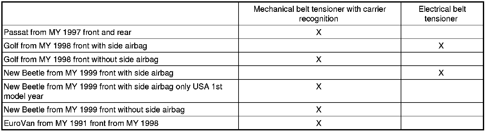

Repairs on Vehicles with Belt Tensioners
Repairs on Vehicles with Belt Tensioners
CAUTION!
• Mechanically ignited belt tensioners without a carrier recognition (triggering lock) must be removed before starting cutting, straightening and/or bending operations.
• Disconnect the battery ground (GND) strap for electrically ignited belt tensioners.
• If the seat belt is rolled on completely, the carrier recognition (triggering lock) will prevent the belt tensioner being ignited (triggered) in an accident.
CAUTION!
• The seat belt must not be unrolled (pulled out) on belt tensioners with a carrier recognition (triggering lock) when performing cutting, straightening and/or bending operations.
• If during cutting, straightening and/or bending operations there is a requirement to make large jolts, then seat belt tensioners with a carrier recognition (triggering lock) must be removed.
The following vehicles do not have a belt tensioner with carrier recognition (triggering lock):
• Golf from MY 1992
• Golf Cabriolet from MY 1994
• Passat from MY 1988
• Passat from MY 1994
Removing and installing seat belts with belt tensioners Seat Belts
Belt Tensioner Applications
